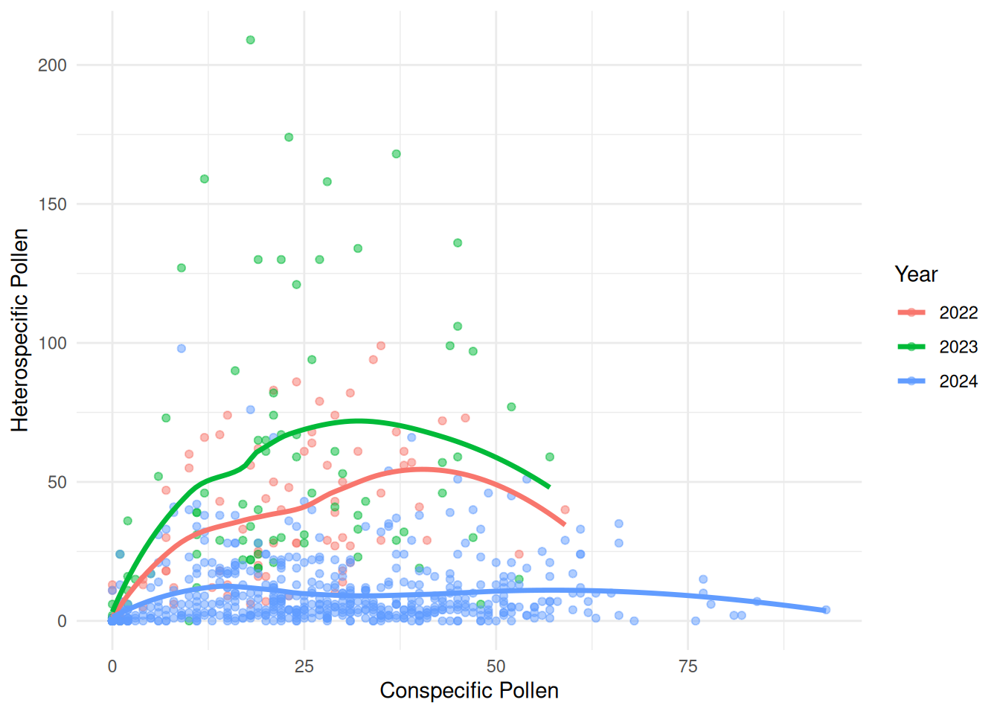

Linking Network Structure to Pollen Deposition Dynamics
Case study on Succisa pratensis (2022-2024)
Author
Jakub Štenc
Published
November 27, 2025
Introduction
As shown in our SCAPE 2025 presentation, we have a unique dataset covering both pollinator visitation networks and stigmatic pollen loads for Succisa pratensis across three years (2022–2024).
While we have observed annual variations in pollinator sharing and heterospecific pollen (HP) receipt, we currently lack a mechanistic explanation linking the network structure (who visits) to the deposition outcome (what lands on the stigma).
I propose we test a specific hypothesis derived from Arceo-Gómez et al. (2016): that the shape of the relationship between Conspecific Pollen (CP) and Heterospecific Pollen (HP) on individual stigmas is determined by the evenness and quality of the pollinator assemblage.
The Conceptual Framework
Arceo-Gómez et al. (2016) argue that intraspecific variation in pollen receipt is not random. By plotting HP against CP for individual flowers, two distinct patterns typically emerge. These patterns act as a signature of the pollinator community structure.
Scenario A: The “Generalist” Assemblage (Type 1)
If the pollinator assemblage is even (many generalists contributing similarly), we expect Type 1 dynamics. These visitors carry mixed loads; therefore, as they deposit more CP, they inevitably deposit more HP.
Pattern: Linear positive relationship.
Ecological Driver: High pollinator evenness; generalized interactions.
Scenario B: The “Specialist/Uneven” Assemblage (Type 3)
If the assemblage is uneven (dominated by a few high-quality specialists and some “messy” low-quality generalists), we expect Type 3 dynamics. High-quality pollinators deposit pure CP (high CP, low HP), while incidental visitors deposit mostly HP (low CP, high HP).
Pattern: Exponential decrease (or “L” shape).
Ecological Driver: Low pollinator evenness; high variation in pollinator quality.
Code
# Your code for plotting the data# Ensure 'year' is treated as a factor for coloringplot( pollen_deposition$conspecific_pollen, pollen_deposition$heterospecific_pollen, col = pollen_deposition$year, pch =16,xlab ="Conspecific Pollen",ylab ="Heterospecific Pollen",main ="CP vs HP per Year")
Raw pollen deposition data (2022-2024).
Code
# Example code for running the models on our data# Split data by year (example for 2024)data_2024 <-subset(pollen_deposition, year =="2024")# 1. Linear Modelmodel_linear <-lm(heterospecific_pollen ~ conspecific_pollen, data = data_2024)# 2. Exponential Model (Non-linear Least Squares)# We provide starting values for a (intercept) and b (decay rate)model_exp <-nls( heterospecific_pollen ~ a *exp(b * conspecific_pollen), data = data_2024, start =list(a =300, b =-0.01))# Compare fitsAIC(model_linear, model_exp)
Code
ggplot(pollen_deposition, aes(x = conspecific_pollen, y = heterospecific_pollen, color =as.factor(year))) +geom_point(alpha =0.5) +geom_smooth(method ="loess", se =FALSE, size =1.2) +# Smoothed trend linetheme_minimal() +labs(x ="Conspecific Pollen", y ="Heterospecific Pollen", color ="Year")

Visualizing the CP-HP relationship. Look for linear increases vs. exponential decays.
Code
test_curve_shape <-function(year_data, year_label) {# 1. Fit Linear Model (Type 1) fit_linear <-lm(heterospecific_pollen ~ conspecific_pollen, data = year_data)# 2. Fit Exponential Model (Type 3) fit_exp <-tryCatch({nls(heterospecific_pollen ~ a *exp(b * conspecific_pollen), data = year_data,start =list(a =max(year_data$heterospecific_pollen), b =-0.01)) }, error =function(e) NULL)# 3. Compare AIC aic_lin <-AIC(fit_linear) aic_exp <-if(!is.null(fit_exp)) AIC(fit_exp) elseNAreturn(data.frame(Year = year_label,Linear_AIC =round(aic_lin, 2),Exp_AIC =round(aic_exp, 2),Best_Fit =ifelse(!is.na(aic_exp) && aic_exp < (aic_lin -2), "Exponential (Type 3)", "Linear (Type 1)") ))}# Run the testresults_2022 <-test_curve_shape(subset(pollen_deposition, year ==2022), "2022")results_2023 <-test_curve_shape(subset(pollen_deposition, year ==2023), "2023")results_2024 <-test_curve_shape(subset(pollen_deposition, year ==2024), "2024")# Display Resultsknitr::kable(rbind(results_2022, results_2023, results_2024), caption ="Model Comparison Results")
Model Comparison Results
Year
Linear_AIC
Exp_AIC
Best_Fit
2022
765.44
773.08
Linear (Type 1)
2023
930.86
NA
Linear (Type 1)
2024
4052.84
NA
Linear (Type 1)
Proposed Analysis
We can strictly test this hypothesis because we have independent datasets for both the curve (pollen counts) and the driver (visitation networks).
Step 1: Characterize the CP-HP Curve (2022-2024)
For each year of Succisa data, we will fit two models to the stigmatic pollen counts:
Linear Model (HP∼CP)
Non-linear/Exponential Model (HP∼a⋅eb⋅CP)
We will determine if the relationship changed between 2022, 2023, and 2024. For example, did 2024 (which showed lower HP in preliminary results) shift from a Type 1 to a Type 3 curve?
Step 2: Calculate Pollinator Evenness
Using our “snapshot” network data (97,000+ interactions), we will calculate Simpson’s Evenness specifically for the sub-network of visitors to Succisa pratensis for the corresponding years.
Step 3: The Link
We will test if years (or plots) with Type 1 (Linear) pollen curves correspond to years with higher pollinator evenness in the visitation data.
Why This Matters
This moves our analysis beyond simple abundance (“we found less HP”) to functional mechanisms.
If we confirm that Succisa fits a Type 3 curve in years with low evenness, it suggests that “pollinator sharing” (a network metric) does not translate linearly to pollen deposition. It would prove that the identity and quality of specific visitors shield the plant from heterospecific pollen interference, even when surrounded by heterospecific neighbors.
Next Steps
Data Prep: I will merge the pollen count CSVs with the plot-level IDs.
Modelling: I will run the nls (non-linear least squares) and lm models in R for the three years.
Network Metrics: I will extract the specific visitor diversity indices for Succisa from the HanPolNet pipeline.
References: Arceo-Gómez, G., Abdala-Roberts, L., Jankowiak, A., Kohler, C., Meindl, G. A., Navarro-Fernández, C. M., … & Alonso, C. (2016). Patterns of among-and within-species variation in heterospecific pollen receipt: The importance of ecological generalization. American Journal of Botany, 103(3), 396-407.